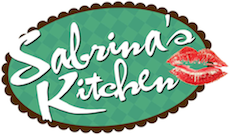

- RECIPES
- EPISODE GUIDE
MORE FROM THE SHOW
DRIED APRICOT FLAMBE ALA MODE

Here's how to make the dish
- Heat a saucepan, melt your butter.
- To that, lightly "saute" your fruits and add your brown sugar to caramelize. Eyeball it and make sure your sugar doesn't burn.
- Sabrina's Safe Option: Pour in rhum and raise heat to medium/medium high to cook off alcohol- 3 to 4 minutes of light stirring. Turn off heat.
- *Challenging Option: The moment you pour in your rhum, light a long match/ kitchen lighter and bring it close to the pan to "flame" your alcohol. Stay on a safe distance! Else, you might end up losing your pretty lashes! :D
- Place scoops of ice cream on a serving bowl or glass. To that, pour your hot, caramelized fruits. And top with cornflakes.
- Serve and enjoy immediately!!!
From my kitchen to yours with love, Mwahhh! -S
Ingredients:
- 1/2 stick of butter
- 1/4 cup of rhum
- 1/4 cup dried apricots, chopped
- 2 large ripe Cavendish bananas (or Lakatan), chopped
- 1/4 cup cornflakes
- 1 tbsp. brown sugar
- Vanilla ice cream